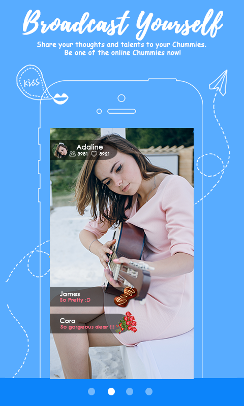
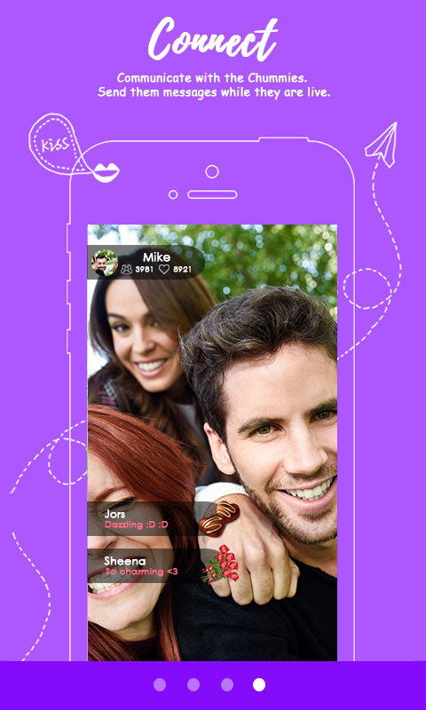

Chums Live is the first Filipino live broadcast social network that allows you to broadcast your moments in real time. It also helps you to engage with and watch talented live broadcasters, which they call as the Chummies, in real time. Chums Live offers a diverse range of exciting and entertaining live video entertainment, including singing, dancing, vlogging, and much more! Viewers can be Chummy and interact with their favorite Chummies by leaving feedback and sending gifts at the same time.

Chums Live is a livestreaming app that is similar to Kumu and BIGO Live. In this application you can check out the Chummies, or the content creators in their platform, broadcast yourself, connect with everyone and give gifts to your favorite Chummies. But how can you earn from this?
Here are the steps to earn money from Chums Live!
To register in Chums, search "Chums Live" in the playstore or apple store, install it then launch the application
After you install the application, you need to sign up to be able to create your account. You can connect your Chums profile to your facebook account, google account, email or your phone number
As you signed in, you can go to the settings and edit your profile. In this section, you can change your display photo, username,user ID, gender, status and your live broadcast photo
To make sure that you will benefit from livestreaming in this app, it is highly recommended that you find yourself a handler. These handlers will give you an orientation and guide you to get more viewers in the app. You can find yourself a handler through Chums Live official facebook page or go for an instant live and wait for them to invite you in their groups.

Being friendly is the key to most live streaming applications. Interacting with your viwers is what make them give you virtual gifts and comes back to watch on your live
Supporting your favorite Chummies by sending them virtual gifts when they broadcast live makes your account level up faster. On the other side, receiving virtual gifts from your viwers makes you earn real cash rewards.
When you purchase a Chums Live VIP kit, you will receive unique and exclusive benefits whenever you enter and watch live broadcasts.
Create or join a Chums Live viewers clan to interact with other viewers, make new friends, and create a community.

2021 * 3-minute read
The app allows you to chat with people nearby and far, watch enjoyable new shows/videos, and make money by showing off your talent. LiveMe is best for those ...
Read More2021 * 2-minute read
Check out the download rank history for Chums Live in United States. ... Get important user feedback by exploring App Reviews and Ratings.
Read MoreVideo Courtesy: Chums Live
https://www.youtube.com/watch?v=w9bPV8HMHKM
We create this content for general information purposes and all the information is base on our understanding and researches and it should not taken as advice. Always take professional advice.
Disclaimer: Note that we do not own the images and videos used in this website. All rights and credit goes directly to its rightful owners. This website is non-profit and made for educational purposes only. No copyright infringement intended.
"Copyright Disclaimer, Under Section 107 of the Copyright Act 1976, allowance is made for "fair use" for purposes such as criticism, comment, news reporting, teaching, scholarship, and research. Fair use is a use permitted by copyright statute that might
otherwise be infringing. Non-profit, educational or personal use tips the balance in favor of fair use"